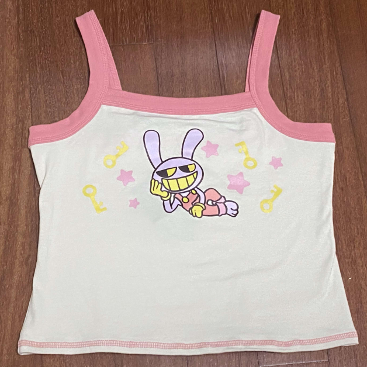
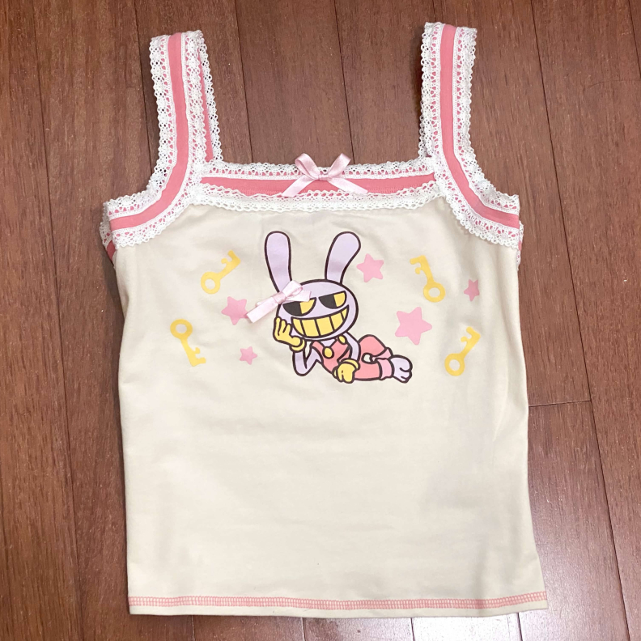
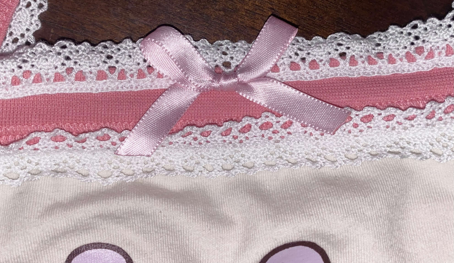
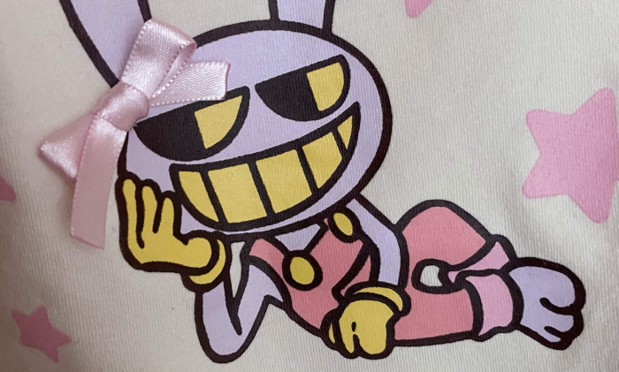
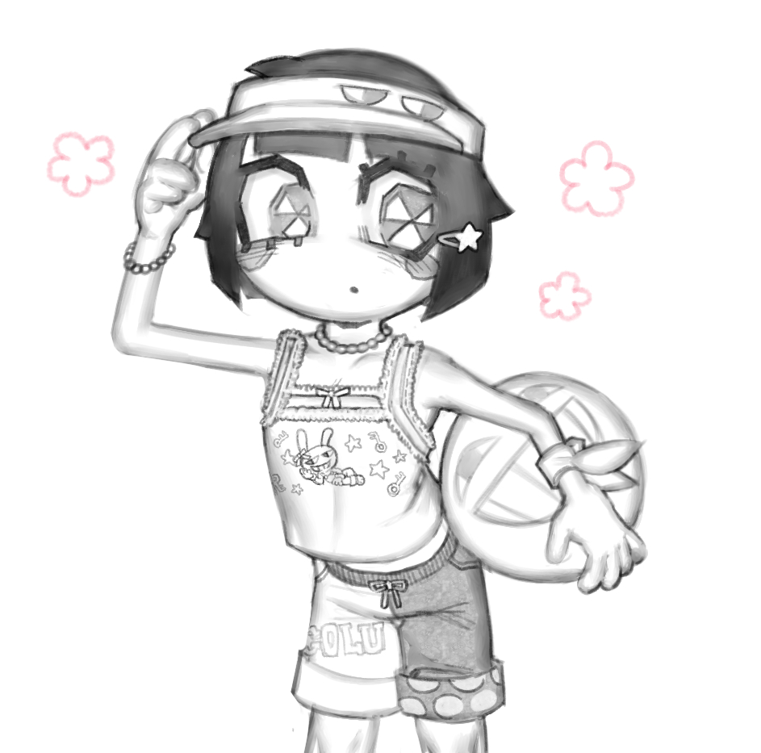

2026.04.03: hot topic jax camisole


i secured this camisole from its first wave release. being that it's a hot topic licensed cutsew, it is exclusive to the US. i think it's one of my favorite apparel under hot topic because it's in my favorite colors, and i'm currently hunting for more summer-friendly cotton stuff. while cute on its own, it's a little too plain. i altered it with some spare white torchon lace and ribbon.


i like clothes in these types of cuts from brands cocolulu and super lovers, so this camisole is fixed to be coordinated with this kind of style. i drew pomni wearing it too. i hope they make a pomni tank so i can put lace on that one too and draw jax matching with her.
